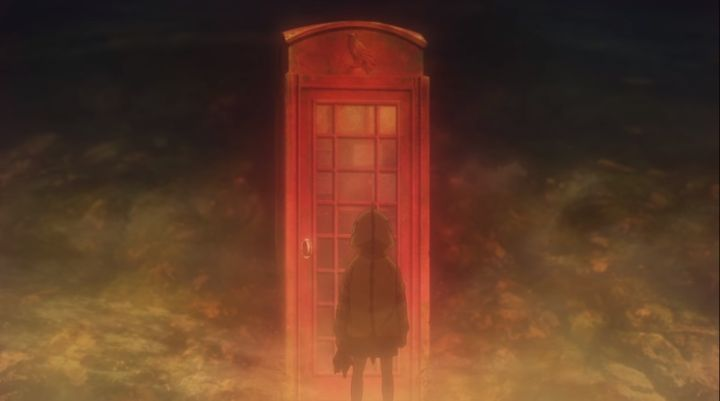

The 2022 anime film "Goodbye, Don Glees!" had a similar sounding name to the 2021 TV anime "Farewell, my Dear Cramer," and both titles confused me. They both sounded like sentimental coming-of-age stories, about saying so long to some Westernized role model - perhaps an Italian ladies-man and a scruffy New Yorker from a show about nothing. Of course, the tiles are a little misleading, but highlight the importance of a good title over a bad one. In the case of "Don Glees," the marketing didn't sell me on the movie either; the main badly-composited poster featured a trio of rambunctious teenage boys on what looked like a hiking trip through the woods. No magic or fantasy, no complex characterizations or plot. No particularly ambitious visuals. I'm still waiting to be sold. To break the ice, the name "Don Glees" refers to a "secret club" made up by two childhood friends, Toto and Roma. Both are outcasts in their small rural Japanese town, and having a tiny clubhouse in the nearby forest helps them pass the time. The story is a coming-of-age drama, taking place a year after high school graduation. Toto, a cynical worrywart, has moved to the big city for medical school, but visits the following summer. Roma has no clear direction, and decided to stay in town to attend farming training school, in the footsteps of his family's business. He clearly doesn't like either the work or the image it gives of himself, and has a unfulfilled interest in photography, and a lost crush in a girl who has since moved to Scotland to pursue that very profession. Roma's spirits improve upon Toto's visit, and he buys a load of fireworks and a drone-helicopter to celebrate the night, like the good old days. This is encouraged by Drop, a third younger member of the club that joined after Toto moved away, but despite being new, he fits in fine. The night doesn't go as planned, with the fireworks fizzling out in the rain, and the drone flying out of control in the windy sky. The three are horrified to hear that a wildfire hit the forest that same night, and that their classmates are spreading rumours that "the Don Glees guys" caused it. They realize that the drone's camera might have footage of the true cause, so they plan a secret multi-day hike through the forest to find the wrecked drone, leading to an adventure they'll never forget (rolls eyes).There seems to be inspiration from American coming-of-age movies here. An interview with the director mentions similarities with the movie "Stand by Me," which is coincidental, but while the plots are very different, the general tone and vibe is similar. It's worth a brief mention that the director, Atsuko Ishizuka, is female, making the choice to focus on teenage boys all the more interesting (the interview mentions "pride" as a differentiating factor between genders). I suppose anime has no shortage of "cute-girls-doing-cute-things" with similar plots, so focusing on an all-male cast is a bit refreshing. Another Western influence are the insert slow-pop songs that occur in the background, with English lyrics, even on the Japanese track. The influences are sometimes at odds with itself: the characters are Japanese and live in Japan, but the movie likes to paint characters as "international" (one of the three leads might be Icelandic?). The point is, if you happen to be a fan of movies like "Stand by Me," "The Goonies," "The Kings of Summer," or "The Breakfast Club," you might find a lot to like in "Goodbye, Don Glees!," even if you don't normally watch anime (in animation, look up "My Beautiful Girl Mari" for a similar tone, although I otherwise wouldn't recommend it). But personally, I have never been a fan of this genre. I never liked how it focuses on realistic moments of social outcast bullying and lonlieness, learning life lessons the hard way, and looking back as if these were the best moments of life (when, to an outsider looking in, it looks like the worst). I watch movies for the escapism. I prefer fantasy, action, comedy. For this genre to work, the themes and conclusion have to be life-changing, not just life-affirming. So this movie had to try REALLY hard for me to enjoy it. I admit it does some things right, but my final feelings to it are lukewarm, if only because of personal preference. As to what the movie does get right - despite the incentrive that begins the hike, it's ultimately more about the adventure rather than the purpose. Even the conclusion drops the plot in favour of the memories made along the way. That was the best approach, and the moment-to-moment comedy and conflict between the three is fun enough. Each of the three clearly has baggage they're working through, and while predictable, it's nice to see that carried out. The tragic conclusion regarding one of the characters leads to an emotionally heartwarming trip to Iceland, an ending that single-handedly elevates the movie. Aside from predictability, it's all solid coming-of-age drama. An even bigger highlight is the art. Not really the characters or animation, which are just servicable enough for a feature film. But the background art is a particular standout. The movie likes to show giant waterfalls and canyons with a sense of fantastical scale I haven't seen before, and the forests and skies are beautifully detailed. The English dub is also strong, and there are more moments in this type of story for them to show dramatic range, although the character's personalities did annoy me a bit for their naturally aimless adolesence (Toto in particular is a one-dimensionally arrogant character). Somehow, watching a dub of this just feels more appropriate over Japanese, since the movie tries so hard to help you forget that it takes place in Japan. Basically, "Goodbye, Don Glees!" is a by-the-numbers American-style coming-of-age drama for boys. If you're a fan of this sentimental genre, it's a solid-quality movie with good direction, if otherwise unremarkable. If you already know you aren't a fan, there isn't much reason to justify watching - all you need to know is "the kids are alright," and you can pass on.
- "Ani" More reviews can be found at : https://2danicritic.github.io/ Previous review: review_Good_Luck_Girl! Next review: review_Grave_of_the_Fireflies